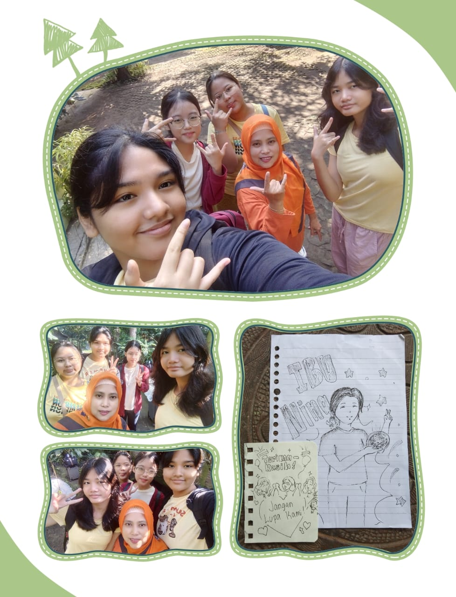

Saya dan peserta lainnya berkesempatan mencoba membajak sawah menggunakan kerbau di Desa Penting Sari. Proses ini melibatkan kerbau yang dilatih untuk membajak tanah, dengan petani mengarahkan hewan tersebut menggunakan tali dan perintah suara. Meskipun sulit, pengalaman ini memberikan wawasan tentang bagaimana kerbau membantu mengolah tanah dengan cara yang ramah lingkungan dan tradisional. Selain mengolah tanah, ini adalah bagian dari tradisi dan pelestarian budaya kami. Kerbau lebih ramah lingkungan daripada alat berat dan membantu kami menjaga hubungan dengan alam.Perubahan cara hidup ini disebabkan oleh beberapa faktor, seperti perubahan iklim yang mempengaruhi ketersediaan sumber daya alam dan peningkatan kemampuan manusia dalam bertani. Seiring dengan berkembangnya teknologi, manusia mulai mengembangkan alat pertanian dan domestikasi hewan, yang membuat mereka lebih menetap dan bergantung pada pertanian untuk kebutuhan pangan. Faktor-faktor ini, ditambah dengan kebutuhan akan pemukiman yang lebih stabil, memicu peralihan dari berburu dan meramu ke cara hidup yang lebih bertani.
Pertanyaan: Apa pendapat anda mengenai candi prambanan dan borobudur?
Wisatawan Asing: "Kedua candi ini luar biasa! Prambanan dengan arsitekturnya yang bagus dan sangat tinggi, saya kaget saat melihatnya langsung. saya belum pernah melihat hal seperti ini" (translated to indonesian)
Wisatawan domestik: "Kalau menurut saya, Borobudur lebih ke arah spiritual dan tenang. Karena itu candi Buddha, suasananya damai banget, apalagi pas pagi-pagi. Sementara Prambanan lebih megah, tinggi-tinggi candinya, dan ada kisah-kisah Ramayana yang diukir. Dua-duanya punya vibe yang beda tapi sama-sama luar biasa."


Masyarakat purba di Sangiran hidup dengan cara berburu dan meramu sebagai metode utama untuk memenuhi kebutuhan hidup mereka. Mereka berburu hewan untuk makanan dan meramu tumbuhan liar. Kehidupan mereka sangat tergantung pada alam, dan mereka memiliki pengetahuan yang mendalam tentang flora dan fauna di sekitar mereka.
Mata pencaharian / pekerjaan: dari homestay
Riwayat bangunan tempat tinggal: dari 2009
Peran di masyarakat: ketua desa Pentingsari
Tradisi keluarga: lebaran pulang ke Jakarta
Tradisi masyarakat: prosesi kenduri, dusun, membangunkan sahur
Pengelolaan keuangan: membayar anak kuliah
Pengelolaan lingkungan: setiap minggu dan Jumat warga desa bersih-bersih bersama,ada juga membersihkan seluruh desa
